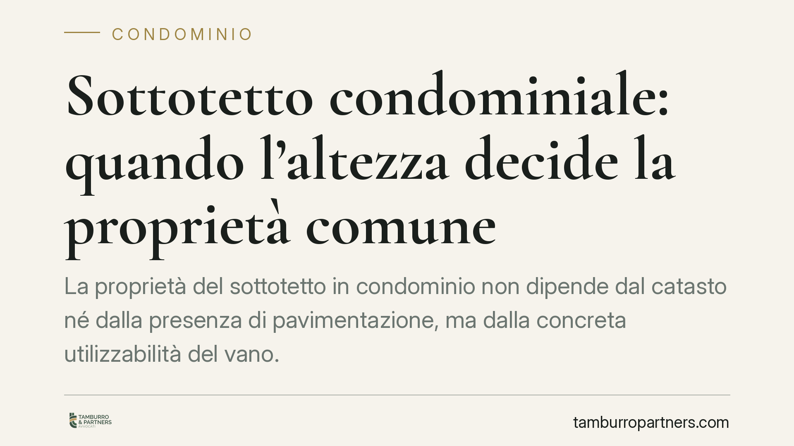

Sottotetto condominiale: quando l'altezza decide la proprietà comune
La proprietà del sottotetto in condominio non dipende dal catasto né dalla presenza di pavimentazione, ma dalla concreta utilizzabilità del vano. Un'altezza che consenta la mobilità umana o lo stoccaggio orienta verso la natura condominiale. È un criterio funzionale che cambia l'esito delle liti tra condomini e proprietario dell'ultimo piano. Vediamo come si prova e chi deve dimostrare cosa.

Il criterio funzionale: cosa rende comune un sottotetto condominiale
Il sottotetto non ha una qualificazione giuridica automatica. Per stabilirne la proprietà occorre guardare alla sua funzione concreta, non all'etichetta catastale.
La giurisprudenza di legittimità distingue da tempo due ipotesi. Da un lato il sottotetto con funzione meramente tecnica: una camera d'aria che isola l'ultimo appartamento dal tetto e ne protegge la copertura. In questo caso il vano è pertinenza dell'unità sottostante e appartiene al proprietario dell'ultimo piano. Dall'altro il sottotetto autonomamente utilizzabile, cioè un ambiente che, per dimensioni e caratteristiche, può servire a usi ulteriori rispetto alla semplice protezione termica.
È qui che entra in gioco l'altezza. Quando il vano consente la mobilità di una persona o l'utilizzo come deposito, prevale la lettura secondo cui si tratta di uno spazio suscettibile di godimento collettivo. Questo dato prevale sull'assenza di pavimentazione finita e sulla classificazione catastale, elementi che da soli non sono decisivi.
Inquadramento normativo
Il riferimento è l'articolo 1117 del Codice civile, che elenca le parti comuni dell'edificio e, soprattutto, fissa una presunzione: salvo titolo contrario, si presumono comuni le parti dell'edificio necessarie all'uso comune o destinate a servizio dell'intero fabbricato.
Il sottotetto non è menzionato espressamente, ma la norma opera attraverso i suoi principi. Se il vano ha una funzione o una potenziale utilità collettiva, scatta la presunzione di condominialità. Per superarla non basta affermare la proprietà esclusiva: occorre un "titolo contrario", cioè un atto che attribuisca in modo chiaro la proprietà a un singolo (ad esempio il rogito di acquisto, il regolamento di condominio di natura contrattuale, un titolo di provenienza).
L'orientamento è consolidato. La Corte di Cassazione ha più volte affermato il criterio della concreta utilizzabilità del vano (tra le altre, Cass. n. 17249/2014; riferimenti ulteriori da verificare in redazione). La pronuncia più recente richiamata dalle fonti si colloca nel solco di questo indirizzo, senza introdurre una regola nuova.
L'onere della prova: chi deve dimostrare cosa
Qui si gioca gran parte del contenzioso. Operando la presunzione di cui all'art. 1117 c.c., il condomino che rivendica la proprietà esclusiva del sottotetto deve provare il titolo contrario. Non è il condominio a dover dimostrare la comunione: è il singolo a dover vincere la presunzione.
Sul piano probatorio, l'altezza utile si dimostra con accertamenti tecnici: rilievi, misurazioni, perizia di un tecnico che attesti le dimensioni effettive e la possibilità di accesso e utilizzo. Il dato catastale e lo stato dei finiti (pavimento, intonaci) possono essere elementi di contorno, ma non ribaltano la valutazione funzionale.
Implicazioni pratiche per condomini e proprietario dell'ultimo piano
Per il proprietario dell'ultimo piano che usa il sottotetto come spazio privato, il rischio è concreto: in assenza di un titolo esplicito, l'uso prolungato non trasforma il vano in proprietà esclusiva. L'utilizzo di fatto non equivale al titolo.
Per il condominio, al contrario, la natura condominiale del sottotetto apre a decisioni collettive sull'uso, sulla manutenzione e, nei casi previsti, sulla possibilità di valorizzazione dello spazio.
La valutazione resta caso per caso. Due sottotetti nello stesso edificio possono avere sorti diverse a seconda dell'altezza, della conformazione e dell'eventuale titolo di provenienza.
Cosa fare in concreto
- Verificate i titoli. Recuperate rogito, regolamento condominiale e atti di provenienza per accertare se esiste un titolo che attribuisce il sottotetto in proprietà esclusiva.
- Misurate il vano. Fate rilevare da un tecnico l'altezza effettiva e la concreta utilizzabilità: è il dato che pesa di più in giudizio.
- Non confidate nel catasto. La classificazione catastale e l'assenza di pavimentazione non sono prove risolutive della proprietà.
- Documentate l'uso. Raccogliete prove dell'utilizzo e della destinazione del vano nel tempo, utili a ricostruire la funzione concreta.
- Inquadrate la posizione prima di agire. Consigliamo di valutare titoli e rilievi tecnici con un professionista prima di avviare o resistere a una controversia.
---
Contributo informativo a cura di Tamburro & Partners Avvocati - Avv. Giuseppe Tamburro. Non costituisce parere legale.
Ogni condominio ha una storia a sé.
Se gestisci un'amministrazione e vuoi un confronto su una specifica questione condominiale, scrivi allo studio. Ti rispondiamo entro un giorno lavorativo.